Los óxidos conductores transparentes (TCO) son semiconductores de banda prohibida ancha que combinan una alta transparencia óptica con una notable conductividad eléctrica, lo que los hace esenciales en LEDs, celdas fotovoltaicas, pantallas planas, pantallas táctiles y fotodetectores. Aunque el óxido de indio y estaño (ITO) domina las aplicaciones comerciales, su alto costo y la inestabilidad en el suministro de indio han impulsado la búsqueda de alternativas. El óxido de zinc dopado con aluminio (AZO) ha surgido como un reemplazo prometedor y económico, con un desempeño optoelectrónico comparable.
Medir con precisión el espesor de las películas delgadas es fundamental para fabricar dispositivos y optimizar su desempeño, pero los métodos convencionales — el análisis de franjas de interferencia o el ajuste de espectros con modelos ópticos rigurosos — son computacionalmente costosos, sensibles a los parámetros iniciales y lentos. AzoNet resuelve este problema con un modelo de aprendizaje profundo supervisado que predice el espesor de películas de AZO directamente a partir de sus espectros de transmitancia óptica, ofreciendo una herramienta de caracterización rápida, no destructiva y precisa.
El modelo acopla un autocodificador convolucional con conexiones de salto cortas (similar a U-Net) a una red neuronal totalmente conectada. Se entrenó con 1.2 millones de espectros sintéticos generados a partir de un modelo óptico de 12 parámetros ajustado a 145 películas experimentales de AZO (100–1500 nm), usando Modelos de Mezclas Gaussianas para capturar la distribución de los parámetros en cinco regiones de espesor. El modelo alcanzó un MAPE de 5.3% (MAE de 15.7 nm) en el conjunto de validación sintético y un MAPE de 6.91% (MAE de 22.7 nm) en las 145 películas experimentales. El trabajo se publicó en ACS Omega (2026) en acceso abierto bajo licencia CC-BY 4.0.
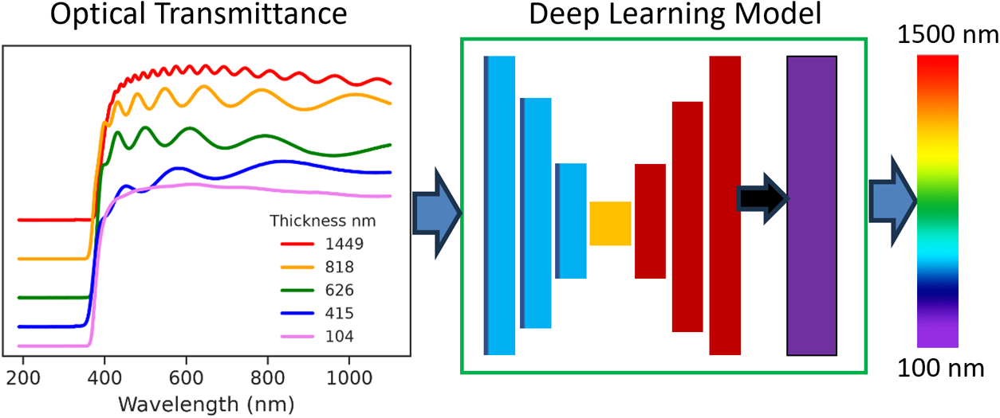
Se depositaron 145 películas delgadas de AZO (100–1500 nm) sobre vidrio mediante depósito químico en fase vapor asistido por aerosol, y se midieron sus espectros de transmitancia entre 190 y 1100 nm (911 puntos por espectro, con resolución de 1 nm). Cada espectro se ajustó con la teoría de transmisión óptica de Alonso et al. — espesor, coeficiente de absorción, índice de refracción (dispersión tipo Sellmeier), rugosidad en ambas interfaces de la película y concentración de portadores — optimizando sus 12 parámetros libres con el algoritmo de Evolución Diferencial.
Los parámetros ajustados se agruparon en cinco regiones de espesor (100–250, 250–600, 600–950, 950–1100 y 1100–1500 nm). Dentro de cada región, Modelos de Mezclas Gaussianas (GMM) capturaron la distribución de cada parámetro. Al muestrear estas distribuciones se generaron 240,000 espectros sintéticos por región — 1.2 millones de muestras en total —, cada uno formado por 911 valores de transmitancia (X) y el espesor correspondiente (Y). El conjunto de datos, mezclado aleatoriamente, se dividió en 80% entrenamiento, 10% validación y 10% prueba.
Una primera red totalmente conectada (Figura 1) mostró una precisión predictiva pobre: sus predicciones sobre los datos de prueba se desvían considerablemente de los espesores reales (Figura 2).
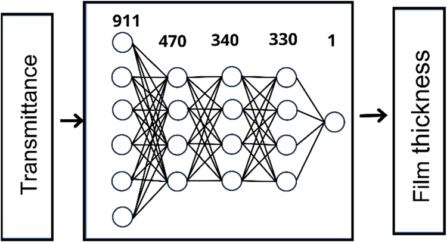
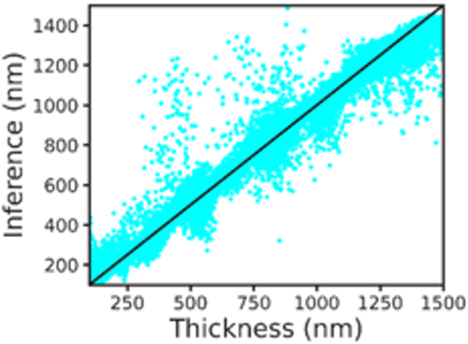
Por ello se agregó un autocodificador convolucional con conexiones de salto antes de la red (Figura 3), para extraer características más ricas del espectro:
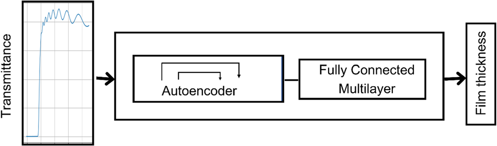
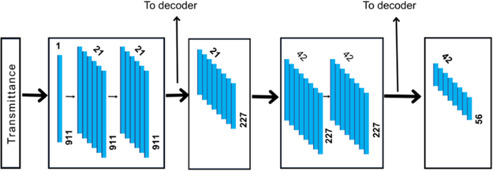
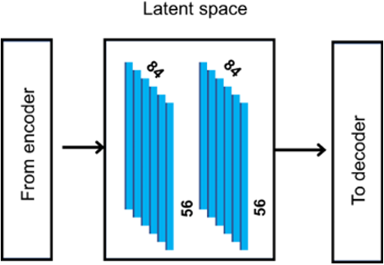
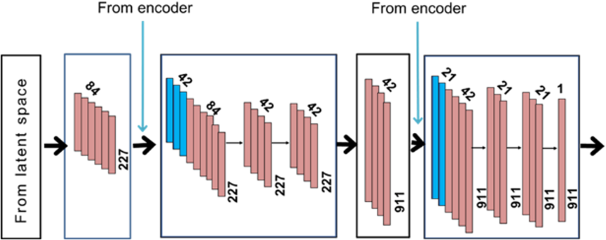
El modelo se implementó en Keras 3 con TensorFlow como backend y se entrenó durante 1000 épocas con el optimizador Adam, pérdida MAE, una tasa de aprendizaje con decaimiento coseno a partir de 0.0001 y un tamaño de lote de 512, en GPUs NVIDIA A100 (80 GB). El tamaño de las capas, el número de filtros y las tasas de dropout provienen del ajuste de hiperparámetros. El MAE final fue de 15.8 nm en entrenamiento y 15.7 nm en validación, con un MAPE de 5.3% en ambos.
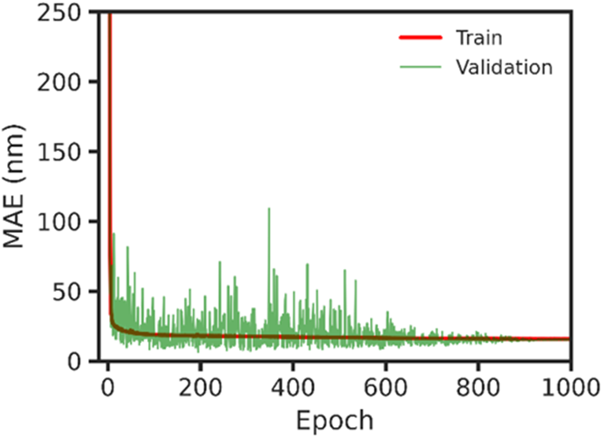
En el conjunto de prueba de 120,000 muestras, las predicciones se alinean estrechamente con la recta identidad (Figura 8), una mejora notable frente a la red totalmente conectada inicial (Figura 2). Aplicado a las 145 películas experimentales, el modelo predijo el espesor con un MAPE de 6.91% y un MAE de 22.7 nm respecto a los espesores obtenidos al ajustar sus espectros (Figura 9).
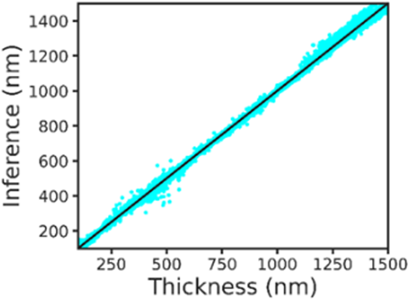
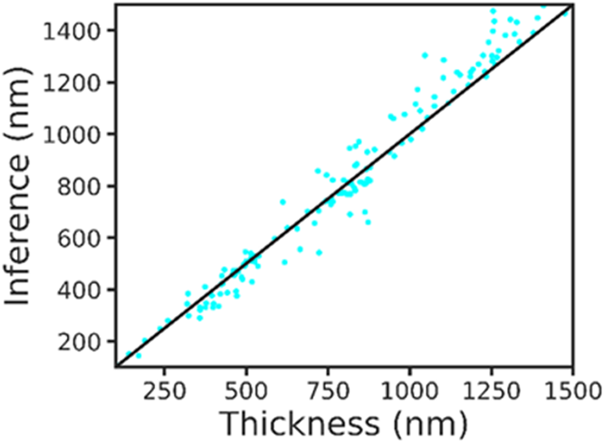
Figuras reproducidas de Guerrero-Sosa et al., ACS Omega 2026, 11, 69373–69380, doi:10.1021/acsomega.6c10558, bajo licencia CC-BY 4.0.
Guerrero-Sosa, V. M.; Carrillo-Verduzco, A.; Alonso-Huitrón, J. C.; Amaro-Colin, A. G.; Esquivel-García, M.; Bokhimi, X. "A Deep Learning Approach for Thickness Determination of AZO Thin Films." ACS Omega 2026, 11, 69373–69380. Acceso abierto (CC-BY 4.0). Artículo en inglés.
Leer el artículo →Notebook interactivo para probar el modelo AzoNet. Descarga el modelo, los datos de fondo y una muestra de prueba; grafica el espectro y el espectro normalizado, ejecuta predicciones con Keras y compara el espesor predicho con el de la muestra original.
Abrir notebook →Notebook para ajustar espectros de transmitancia experimentales con el modelo teórico de Alonso mediante el algoritmo de Evolución Diferencial. Requiere un espectro de transmitancia y una estimación inicial del espesor con su incertidumbre. Devuelve los parámetros optimizados: espesor, rugosidad, coeficientes de Sellmeier, valores de absorción y densidad de portadores.
Abrir notebook →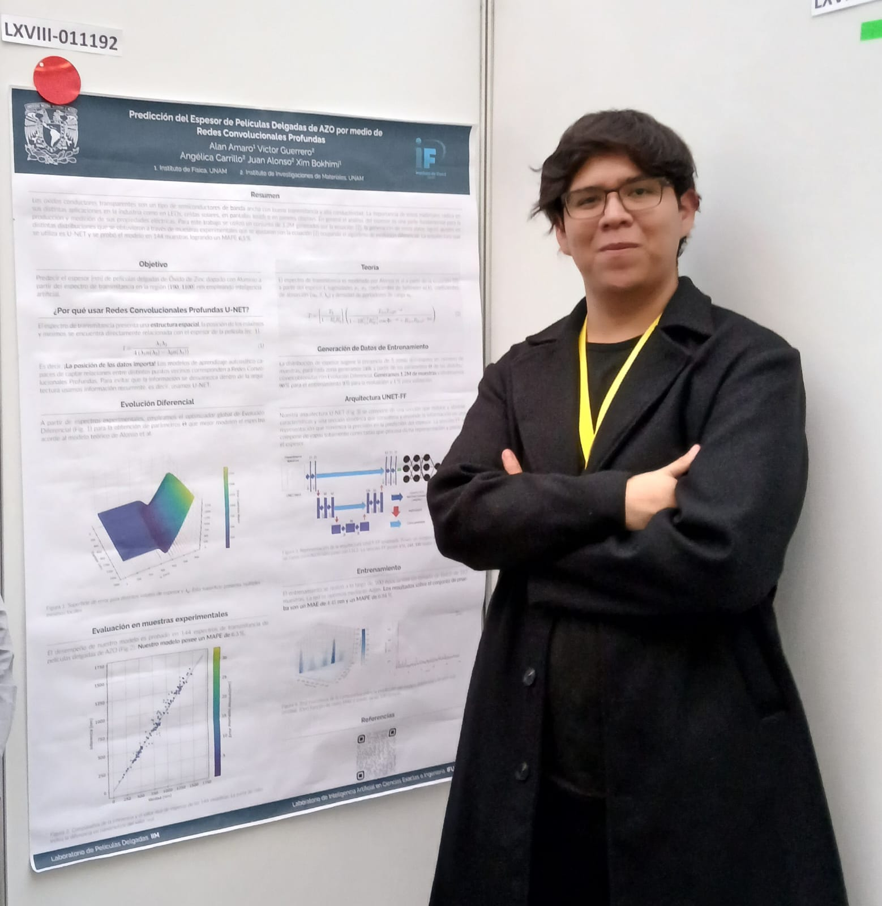
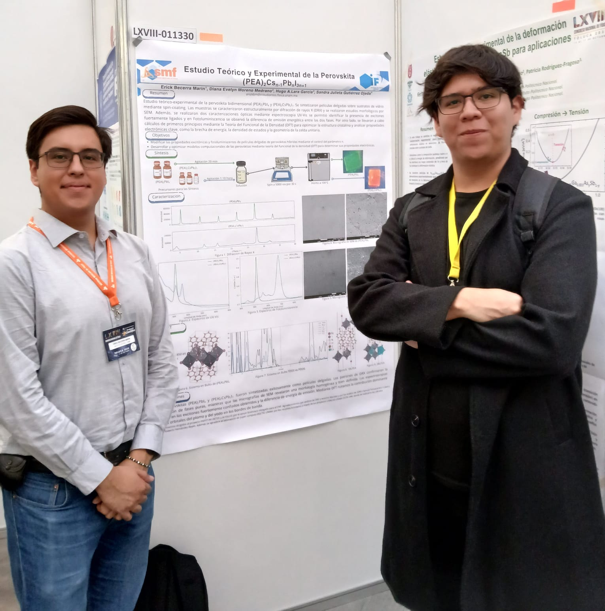
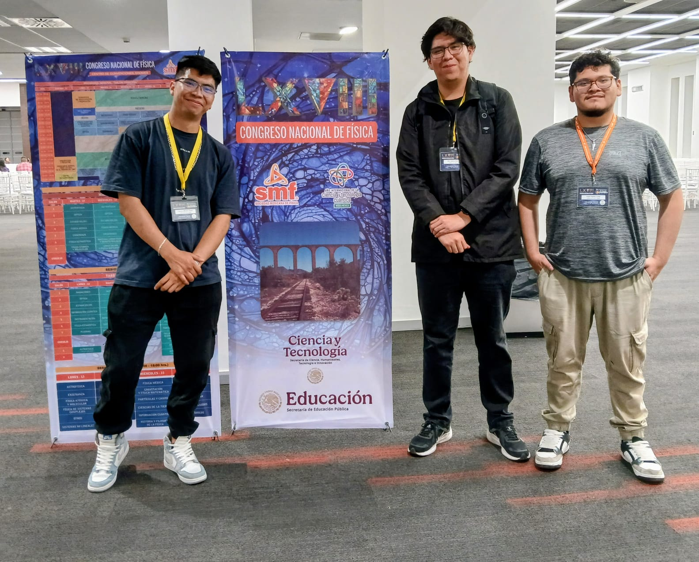